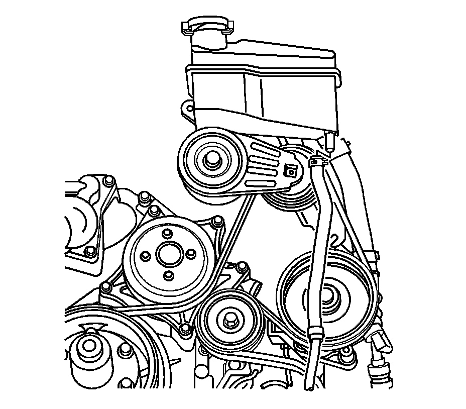
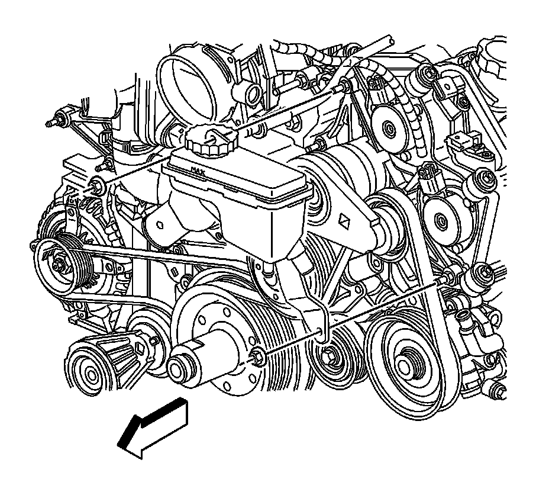

Power Steering Fluid Reservoir: Service and Repair
Remote Power Steering Fluid Reservoir Replacement (LH2 - Gas, 8 Cylinder, 4.6L, SFI, V8, DOHC, HO)
Removal Procedure
1. Remove the front air deflector. Refer to Front Air Deflector Replacement (Service and Repair) .
2. Place drain pans under the vehicle as needed.
3. Remove the air cleaner outlet duct. Refer to Air Cleaner Outlet Duct Replacement (Service and Repair) .
4. Remove as much power steering fluid from the remote power steering fluid reservoir as possible.

5. Disconnect the power steering cooler outer hose from the remote power steering fluid reservoir.

6. Disconnect the power steering fluid reservoir outlet hose from the remote power steering fluid reservoir.

7. Remove the remote power steering fluid reservoir nuts.
8. Remove the remote power steering fluid reservoir from the vehicle.
Installation Procedure
1. Install the remote power steering fluid reservoir to the vehicle.
Notice: Refer to Fastener Notice (Fastener Notice) .
2. Install the remote power steering fluid reservoir nuts.
Tighten the nuts to 10 N.m (89 lb in).
3. Connect the power steering fluid reservoir outlet hose to the remote power steering fluid reservoir.
4. Connect the power steering cooler outer hose to the remote power steering fluid reservoir.
5. Clean any excess power steering fluid from the vehicle and remove the drain pans.
6. Install the front air deflector. Refer to Front Air Deflector Replacement (Service and Repair) .
7. Install the air cleaner outlet duct. Refer to Air Cleaner Outlet Duct Replacement (Service and Repair) .
8. Fill and bleed the power steering system. Refer to Power Steering System Bleeding (Service and Repair) .